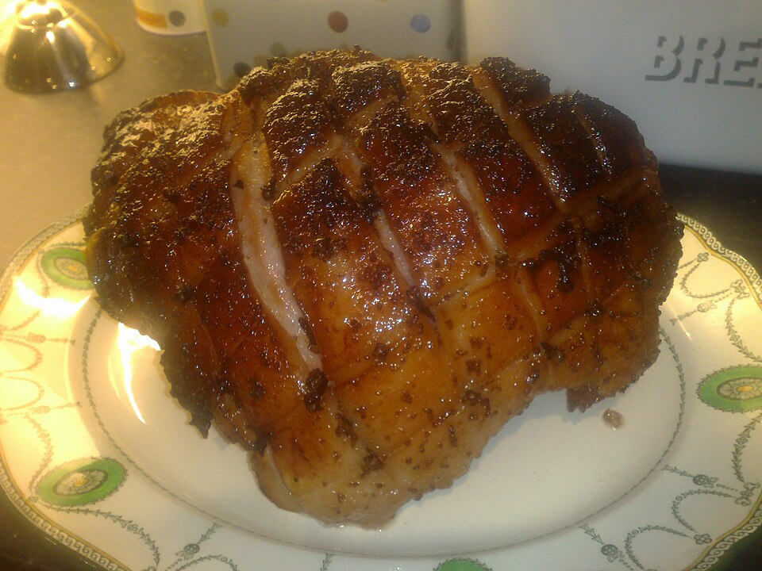

Carnes
Tender picante

Ingredientes
- 1 tender semi-desossado (~3 kg)
- ½ garrafa de vinho branco seco (~400 ml)
- 1 xícara (chá) de açúcar mascavo
- 4 colheres (sopa) de mostarda
- 3 cebolas grandes em gomos
- 4 colheres (sopa) de catchup
- 1 pimenta dedo-de-moça picada
- ½ talo de cebolinha picada
Modo de preparo
- Coloque o tender em assadeira funda, regue com o vinho e faça cortes na superfície.
- Espalhe a pasta de açúcar mascavo com mostarda; arrume as cebolas ao redor; cubra com alumínio e asse a 200 °C ~1 h.
- Retire o alumínio, regue e doure mais 15 minutos. Misture o caldo da assadeira com catchup, pimenta e cebolinha. Sirva com espinafre na manteiga.
Observação
Acompanhamento de espinafre citado no final; não há lista detalhada — refogue espinafre em manteiga com sal.